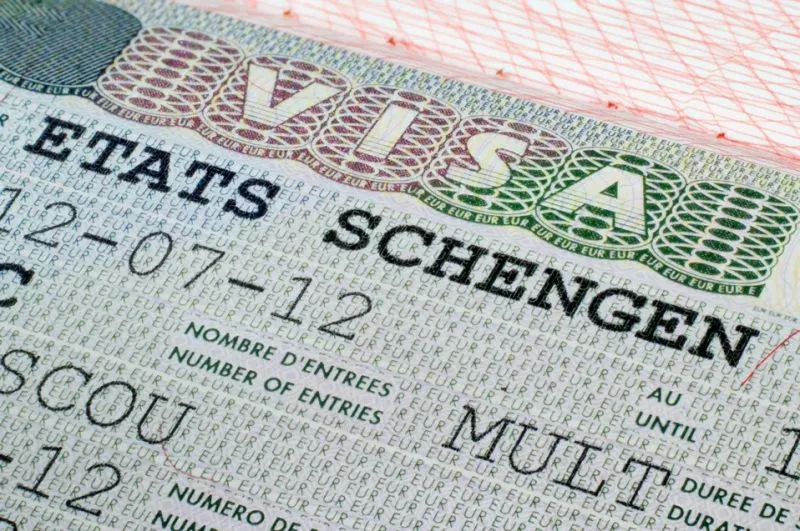

The European single market grants the freedom of movement to products, services, capital and humans. It's a very economic definition of humans which considers citizens merely as production factors. Still, it works and every year, more and more citizens choose to live and work in a country other than their country of origin. The problem however is that by doing so, they often loose most of their democratic rights.
I'm a good example. I'm German, in France since 2012, since 2025 in Slovenia. I can only vote in municipal and European elections in Slovenia once I get my residency card. In all other elections I have no right to vote. Back in Germany, where I haven't lived since 2008, I will loose my unconditional right to vote after 25 years. By being European, I'm thus indirectly supporting nationalism, because I can no longer vote in my home country and also not in Slovenia in most relevant elections. There are 15 million mobile EU citizens today, 2 million alone in France (the equivalent to 5-7% of the total electorate). 2 million additional votes, likely against populism and for Europe can make a difference.
I believe we should live in a Europe that creates different tiers of citizens when it comes to democratic rights. You may argue I could just have taken french nationality, but wouldn't this go against the idea of free movement? Plus now I'm in Slovenia. Do I now need to take Slovenian nationality on top just to vote. We cannot be expected to change nationality every time we move , it's a cumbersome process that often takes many years and hurdles to pass.
Our democracies are probably already weakened by limiting voting rights to nationality or ethnicity instead of citizenship. If we are serious about the European project, full voting rights for EU citizens are a prerequisite.
My focus points
Full voting rights for EU citizens
The right to choose the country you vote in will be the 5th freedom of the European single market - or a first democratic freedom in the European Union. We can take New Zealand as example, which gives full voting rights after 24 months of continuous residence. If we want to be inspired by the US war for independence, "no taxation without representation" was a thing for starting a war back then. I'd not go as far, but we could consider 24 months of continued residency and 2 submitted tax declarations as sufficient to be eligible to vote in all elections. Which of course opens another Pandora's box of whether one can also stand in all elections as candidate and how to treat citizens with nationalities from outside the European Union.
EU Citizenship
If the EU is serious about curbing nationalism in member states, we should start making EU citizenship a thing. There are accession criteria to become an EU member state. Let's define technical criteria for EU citizenship and let's spend some effort and budget on promoting it. From 2nd and 3rd generation immigrants having a hard time to identify with the country they were born in (often courtesy of being discriminated) to citizens disillusioned with their government and country, we should not underestimate the potential appeal of not having to consider oneself solely having the nationality of this or that member state, but also European citizenship.
Related blog posts

Free movement for citizens or human resources?
(Sven Franck, ) It's Schengen's birthday! On June 14th 1985, the agreement to abolish border controls was signed in Schengen. 40 years later, 29 countries are participating: the EU less Cyprus and Ireland but with Switzerland, Norway, Liechtenstein and Iceland.Read the article.
There are between 1.5 million and 2 million European Union citizens living in France from other Member States. Let's mobilise to help them register to vote and ensure that the far right does not win a majority in 2024. See the website